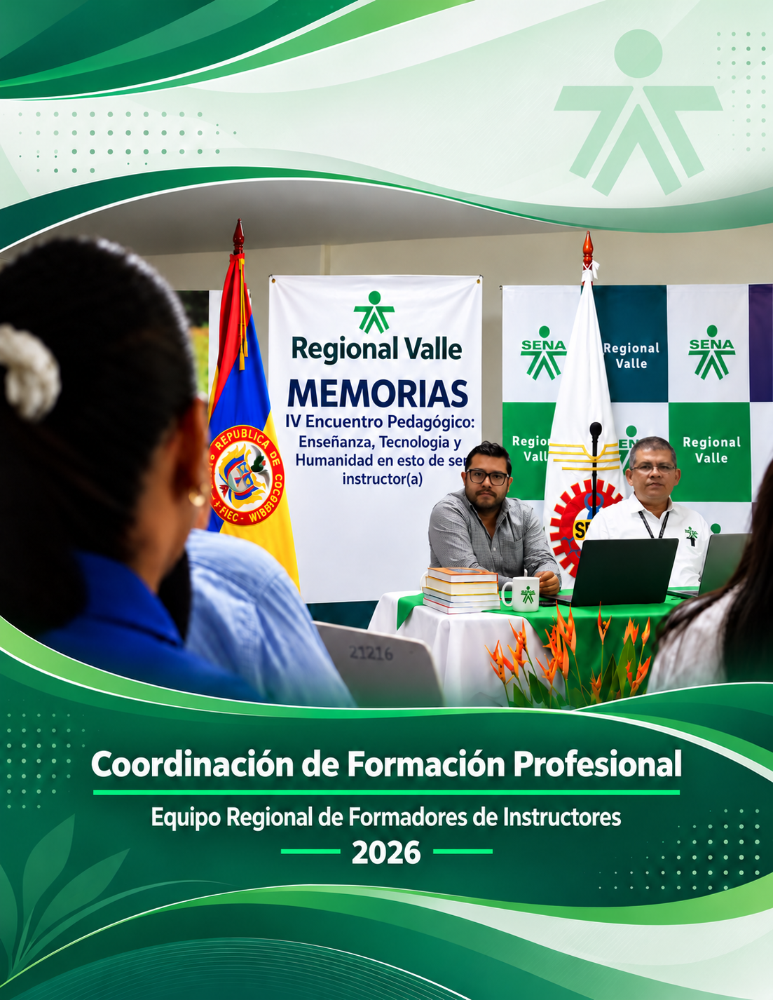
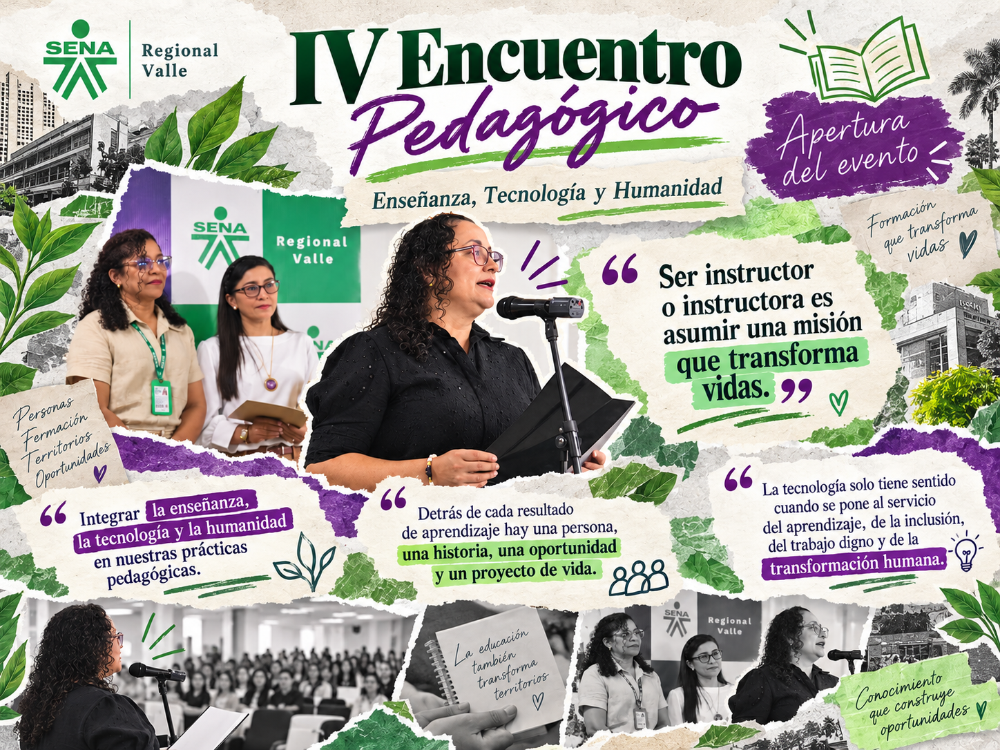
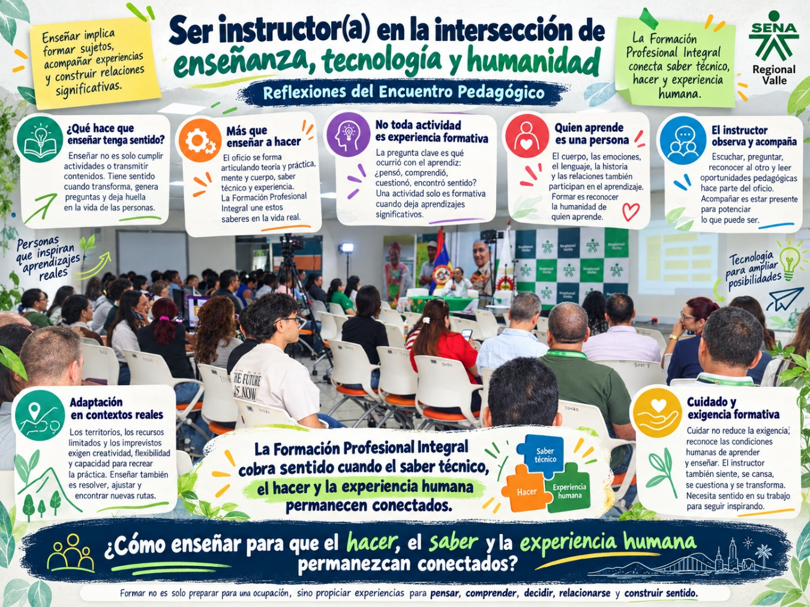
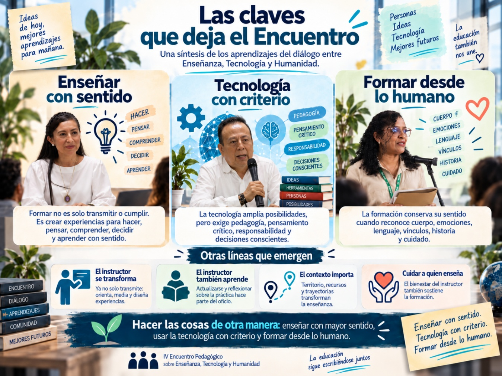
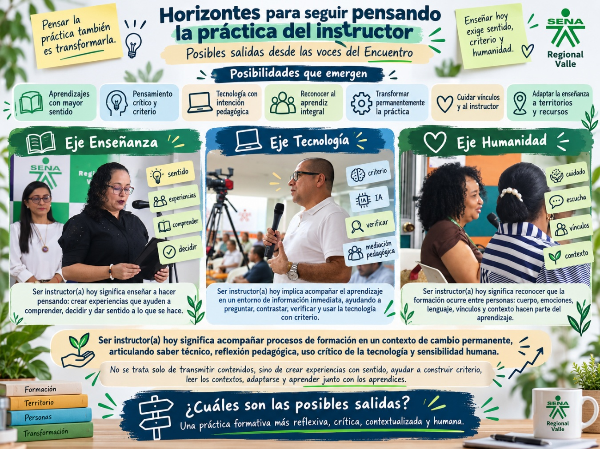
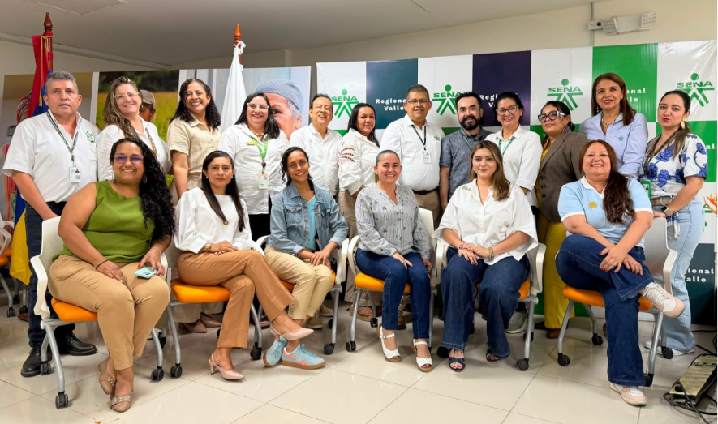

Servicio Nacional de Aprendizaje · Regional Valle
IV Encuentro Pedagógico
Enseñanza, Tecnología y Humanidad en esto de ser instructor(a)
Memorias del encuentro

Tres ejes para una conversación
Enseñanza, tecnología y humanidad
Las ponencias, los conversatorios, las voces de los centros de formación y las experiencias compartidas pusieron en relación estas tres dimensiones del oficio de ser instructor(a).
Enseñanza
Volver a preguntarse qué significa enseñar
Las formas de hacer, pensar y construir sentido en la formación para el trabajo.
Leer este eje → 04 · Eje tecnologíaTecnología
Pensar la IA más allá de la herramienta
La inteligencia artificial y sus desafíos para el conocimiento, la pedagogía y el criterio.
Leer este eje → 05 · Eje HumanidadHumanidad
Cuerpo, emoción, lenguaje y experiencia
La experiencia de enseñar y aprender entre personas y en contextos concretos.
Leer este eje →1. La pregunta que convoca al encuentro
El Encuentro nace de una pregunta cercana a la experiencia cotidiana de quienes enseñan: ¿qué significa ser instructor(a) hoy? Una pregunta que invita a mirar la enseñanza del oficio más allá de los contenidos, las herramientas o las metodologías, para pensar también en las personas que enseñan y aprenden, en los cambios que trae la tecnología y en el sentido humano de la formación. Es así como, enseñanza, tecnología y humanidad se encuentran como tres dimensiones que ayudan a conversar sobre los retos, las decisiones y las posibilidades que atraviesan actualmente la labor del instructor.
1.1. Un encuentro para pensar el oficio de ser instructor(a)
El Encuentro se organizó durante toda una jornada laboral en la Sede de la Escuela Nacional de Instructores en la Sede SENA Salomia en la ciudad de Cali, el día 9 de julio de 2026. Se propició y se cumplió con una agenda que permitió pensar el oficio de ser instructor desde distintos planos que se fueron enlazando a lo largo de la jornada:

| Actividad | Responsable |
|---|---|
| Presentación | Dra. María Eugenia López / Subdirectora (e) Marlly Arango, CDTI |
| Instalación del evento: Saludo y Bienvenida | Dra. María Eugenia López / Subdirectora (e) Marlly Arango, CDTI |
| Secuencia videográfica 1. Componente Enseñanza | — |
| Contexto pedagógico del evento. | — |
| EJE ENSEÑANZA | |
| Secuencia videográfica 2. Componente Enseñanza | — |
| Ponencia 1. | Dr. (c). David Novoa Alvarez |
| Nombre: " Hacer es pensar”: Reflexiones en la enseñanza de los oficios y las ocupaciones | Formador de Instructores Regional Valle |
| Secuencia videográfica 3. Componente Enseñanza | — |
| Ponencia 2. | Mg. Luz Alsivia Romero |
| Nombre: “Cuando enseñar deja de tener sentido” | Formadora de Instructores Regional Distrito Capital |
| Conversatorio sobre ponencias | — |
| Secuencia videográfica 4. Componente Enseñanza | — |
| Contexto Exposición Fotográfica “EntreVistas” | Aprendices Fotografía CDTI |
| EJE TECNOLOGÍA | |
| Secuencia videográfica 1. Componente Tecnología | — |
| Ponencia 1. | Dr. Ricardo Rengifo |
| Nombre: “Cartografías de la inteligencia artificial: una lectura desde las nociones de poder y saber". | Universidad del Valle |
| Secuencia videográfica 2. Componente Tecnología | — |
| Ponencia 2. | Mg. Héctor F. Hoyos. |
| Nombre: “Retos de la enseñanza en los tiempos de la IA” | Formador de Instructores Regional Valle |
| Conversatorio sobre ponencias | — |
| Secuencia videográfica 3. Componente Tecnología | — |
| EJE HUMANIDAD | |
| Secuencia videográfica 1. Componente Humanidad | — |
| Taller: Cuerpo, emoción y lenguaje | Esp. Sandra Ramón |
| Taller: Cuerpo, emoción y lenguaje | Formadora de Instructores Regional Distrito Capital |
| Secuencia videográfica 2. Componente Humanidad | — |
| Formadoras de Instructoras- CTA Regional Valle | |
| Conversatorio Eje Humanidad | — |
| Secuencia videográfica 3. Componente Humanidad | — |
| Conclusiones y cierre del evento. | — |
La apertura del Encuentro
Moderadoras: Yanin Lorena Rojas – Sandra patricia Galindez, Formadoras de Instructoras Regional Valle
Instalación por Subdirectora (e) Marlly A. Arango, Centro de Diseño Tecnológico Industrial
El recorrido comenzó por la enseñanza, preguntándose qué significa enseñar un oficio, cómo se han transformado las prácticas formativas y qué sentido tiene hoy la labor del instructor; avanzó luego hacia la tecnología, especialmente hacia los desafíos que plantea la inteligencia artificial para el conocimiento, la toma de decisiones y las formas de enseñar; y culminó en la humanidad, motivando la reflexión hacia el cuerpo, las emociones, el lenguaje y las relaciones que sostienen todo proceso formativo.
Entre estos momentos, también se dispusieron conversatorios, preguntas y experiencias que evitaron que las ponencias quedaran como exposiciones aisladas y propiciaron que cada participante relacionara lo escuchado con su propia práctica. Así, más que presentar tres temas independientes, la organización del Encuentro construyó un recorrido que llevó de la pregunta por el qué, para qué y cómo enseñamos, a la reflexión sobre la IA y las tecnologías como medios, qué de éstas y bajo qué criterios lo hacemos, para terminar, preguntándonos sobre el sentido, el cuerpo y sus relaciones en el acto educativo, quiénes somos y cómo nos relacionamos cuando ejercemos el oficio de formar a otros.
1.2. Enseñanza, tecnología y humanidad: tres dimensiones de una misma conversación
De manera sucinta, podemos decir que cada uno de los tres ejes fue entendido como:
- Enseñanza: Práctica que articula hacer, pensar y construir sentido, en la que el instructor acompaña y crea condiciones para que el aprendiz construya conocimiento.
- Tecnología: Fenómenos que transforman las formas de enseñar y aprender, y que exige usar la inteligencia artificial con criterio, pensamiento crítico y responsabilidad.
- Humanidad: Dimensión corporal, emocional, lingüística y relacional que recuerda que enseñar y aprender es, ante todo, un encuentro entre personas.
1.3. Las preguntas que abrieron la jornada y dieron sentido pedagógico al evento
El sentido pedagógico del encuentro se presentó a partir de la mayéutica mediante preguntas para la reflexión, siendo entre otras estas las siguiente y aclarando que algunas fueron planteadas de manera explícita y otras han sido recuperadas a partir del análisis de las intervenciones:
- ¿Qué está pasando hoy con la enseñanza en el SENA?
- ¿Cómo estamos enseñando y qué necesitamos revisar en nuestras prácticas ante los cambios sociales, tecnológicos, productivos y en las formas de aprender?
- ¿Qué transformaciones está viviendo el oficio de ser instructor?
- ¿Qué implica pasar de transmitir contenidos al desarrollo de habilidades, actitudes y construcción de conocimientos en el contexto ocupacional, mediante el diseño de experiencias, acompañamiento de aprendizajes y fortalecimiento de la autonomía y el pensamiento crítico de los aprendices?
- ¿Qué lugar debe tener la tecnología en la formación?
- ¿Cómo incorporar la inteligencia artificial y otras tecnologías no para reemplazar los procesos pedagógicos, sino para enriquecerlos y ponerlos al servicio de la enseñanza y el aprendizaje?
- ¿Cómo conservar el sentido humano de la formación?
- ¿Cómo hacer que, en medio de la transformación tecnológica, sigamos reconociendo que detrás de cada proceso formativo hay una persona, una historia y un proyecto de vida?
Si bien estas preguntas anticiparon el recorrido por los ejes temáticos de Enseñanza, Tecnología y Humanidad y situaron el Encuentro desde el punto de vista pedagógico, en el desarrollo del encuentro, más allá de ser una sucesión de contenidos, se abrieron espacios para que los instructores se pensaran críticamente su propia práctica.
2. Las voces del Encuentro
El encuentro convocó a ponentes, participantes, funcionarios y asistentes con diversidad de capacidades y potencialidades, quienes nutrieron desde la riqueza de las diferencias las conceptualizaciones abordadas en el evento.
2.1. Una conversación construida desde distintas experiencias
Las participaciones se dieron desde distintos roles:
- Ponentes: Voces que aportaron perspectivas conceptuales y críticas sobre enseñanza, tecnología, inteligencia artificial y humanidad.
- Instructores asistentes: Protagonistas de la reflexión sobre la práctica pedagógica y los cambios que atraviesa el oficio de enseñar.
- Formadores de instructores - Moderadores: Orientadores y dinamizadores del análisis pedagógico, encargados de acompañar la cualificación de quienes forman.
- Asistentes: Comunidad convocada a escuchar, dialogar, contrastar experiencias y relacionar las reflexiones del Encuentro con su propia práctica. Se destaca la alta participación en espacios de transmisión online, con lo cual se llegó a distintas regiones del país.
2.2. Escuchar sin jerarquizar las perspectivas y pasar de las intervenciones particulares a una conversación colectiva
Como propensión de base, se buscó reconocer cada intervención como una expresión situada dentro de una conversación más amplia, sin convertir alguna de ellas en la lectura correcta o definitiva del Encuentro.
Las ponencias, los vídeos de los Centros, los conversatorios y los ejercicios propuestos permitieron poner en relación experiencias, preguntas y miradas distintas sobre la enseñanza, la tecnología y la humanidad.
Así, se pudo observar el paso de las intervenciones particulares a una conversación colectiva en busa de coincidencias, diferencias y complementariedades entre lo planteado.
El diálogo entre los tres ejes
6. Encuentro de los tres ejes
Las reflexiones sobre enseñanza, inteligencia artificial y condición humana se entrecruzan y abren nuevas preguntas para la práctica del instructor.
Leer el encuentro de los ejes y sus tensiones
8. Las claves que deja el Encuentro
Al observar en conjunto las ponencias, conversatorios, vídeos, ejercicios y aportes de los participantes, pueden identificarse algunas ideas que atraviesan los tres ejes y adquieren un valor mayor que el de cada intervención particular.
8.1. Primera clave: Del transmitir y cumplir al construir experiencias de aprendizaje con sentido
Una de las ideas más persistentes del Encuentro es que enseñar no puede reducirse a transmitir información, ejecutar una planeación o conseguir que el aprendiz reproduzca un procedimiento. El hacer adquiere valor formativo cuando está acompañado de comprensión, reflexión, decisión y capacidad para actuar frente a situaciones nuevas.
Desde el eje Enseñanza, esta cuestión aparece en la relación entre hacer y pensar, en la necesidad de interrogar el sentido de las actividades y en el desplazamiento desde lo que hace el instructor hacia lo que efectivamente ocurre con quien aprende. Los argumentos señalan, además, que cumplir una actividad no garantiza por sí mismo comprensión o aprendizaje.
Esta línea clave se prolonga en los otros dos ejes. Frente a la inteligencia artificial, ya no basta con acceder a respuestas: es necesario interpretarlas, contrastarlas y decidir qué hacer con ellas. Desde Humanidad, el aprendizaje tampoco puede entenderse separado de la experiencia concreta de la persona.
En resumen: Formar significa crear experiencias en las que el aprendiz pueda hacer, pensar, comprender, decidir y encontrar sentido en aquello que aprende.
8.2. Segunda clave: La tecnología exige más pedagogía, criterio y responsabilidad
La segunda línea surge de una constatación compartida: la tecnología está transformando las formas de producir, acceder y relacionarnos con el conocimiento, pero su presencia no transforma automáticamente la enseñanza.
El Encuentro cuestiona tanto una incorporación acrítica de las tecnologías como su rechazo. La inteligencia artificial aparece como una posibilidad para ampliar experiencias de aprendizaje, pero también como un fenómeno que obliga a preguntarse por los datos, los sesgos, la clasificación, la privacidad, las relaciones de poder y las decisiones que podemos estar delegando en los sistemas algorítmicos.
Por ello, la capacidad que adquiere mayor importancia no es simplemente usar IA, sino desarrollar criterio para relacionarse con ella. Preguntar, contextualizar, contrastar, verificar, interpretar y decidir se convierten en acciones centrales de la formación contemporánea. El Encuentro es explícito al señalar que la tecnología por sí misma no garantiza una práctica pedagógica diferente.
En resumen: Cuanto mayores son las posibilidades de la tecnología, mayor es la necesidad de una pedagogía capaz de interrogar su sentido, sus efectos y sus límites, y de formar autonomía, pensamiento crítico y responsabilidad.
8.3. Tercera clave: La formación sigue siendo una experiencia profundamente humana
El recorrido del Encuentro conduce finalmente a una afirmación que atraviesa y conecta los tres ejes: enseñar y aprender ocurren entre personas. El aprendiz no es únicamente alguien que desarrolla competencias o procesa información, y el instructor tampoco es solamente un experto que transmite un saber.
El cuerpo, las emociones, el lenguaje, los vínculos, las historias personales y las condiciones concretas en las que ocurre la formación participan de la experiencia de aprender. Desde esta perspectiva, escuchar, observar, acompañar y cuidar no aparecen como dimensiones externas a la pedagogía, sino como parte de ella.
Esta dimensión adquiere todavía mayor relevancia frente a tecnologías capaces de producir lenguaje, responder preguntas o simular cercanía. El Encuentro permite distinguir entre la capacidad de una máquina para procesar y producir respuestas y la experiencia de una persona que siente, se relaciona, construye significado y asume responsabilidad por sus decisiones.
En resumen: La Formación Profesional Integral conserva su sentido cuando reconoce que detrás de cada aprendizaje hay una persona con cuerpo, emociones, lenguaje, historia, vínculos y posibilidades de transformación, en tanto que de manera crítica y propositiva puede vincular los desarrollos tecnológicos y la IA en el contexto de la enseñanza y el aprendizaje de lo ocupacional, para favorecer su interacción con el trabajo y con la vida misma
8.4. Otras claves que emergen del análisis
Se reconocen, además, otras líneas que acompañan y fortalecen las tres anteriores:
El oficio del instructor está en transformación permanente. El instructor deja de aparecer únicamente como experto técnico y se configura también como mediador, orientador, diseñador de experiencias, lector de contextos y acompañante en la construcción de criterio. Esto no elimina su saber técnico: amplía la responsabilidad pedagógica que lo acompaña.
El instructor también necesita aprender y transformarse. Los cambios tecnológicos, productivos y sociales hacen difícil sostener la figura de quien ya posee todas las respuestas. Enseñar supone actualizarse, revisar las propias certezas, experimentar y convertir la práctica en objeto permanente de reflexión.
El contexto y el territorio forman parte de la enseñanza. No existe una práctica pedagógica que pueda aplicarse de la misma manera en cualquier situación. Los recursos, los territorios, las condiciones sociales, las trayectorias de los aprendices y las realidades productivas exigen flexibilidad y creatividad.
Cuidar a quien enseña también hace parte de cuidar la formación. El Encuentro hace visible que el instructor tiene cuerpo, emociones, cansancio y condiciones concretas de trabajo. Su bienestar y las posibilidades de encontrarse con otros para reflexionar sobre la práctica también forman parte de las condiciones de una formación de calidad.
Al poner estas claves en relación, la idea que parece condensar el sentido general del Encuentro es que la transformación que se demanda al instructor no consiste simplemente en hacer más actividades, incorporar más tecnologías o acumular nuevas metodologías.

La necesidad de cambio más latente consiste en hacer las cosas de otra manera: enseñar con mayor conciencia del sentido, usar la tecnología con criterio, reconocer integralmente a las personas, leer los contextos y asumir la propia práctica como un proceso que también necesita aprender y transformarse.
En ese sentido, las tres claves principales podrían condensarse en tres expresiones:
Enseñar con sentido. Tecnología con criterio. Formar desde lo humano.
9. Horizontes para seguir pensando la práctica del instructor
Este capítulo responde a la cuarta pregunta orientadora: ¿cuáles son las posibles salidas?
9.1. Posibilidades que aparecen desde las voces del Encuentro
Las intervenciones del Encuentro permiten reconocer algunas posibilidades de acción que surgen de la propia conversación pedagógica y no de recomendaciones externas. Entre ellas se destacan:
- Construir experiencias de aprendizaje con mayor sentido, más allá de transmitir contenidos o cumplir actividades.
- Fortalecer el pensamiento crítico y la construcción de criterio, especialmente frente a la inteligencia artificial y la abundancia de información.
- Incorporar la tecnología con intención pedagógica, como mediación y no como sustituto de la enseñanza.
- Reconocer al aprendiz de manera integral, considerando cuerpo, emociones, lenguaje, contexto e historia.
- Revisar y transformar permanentemente la práctica del instructor, aprendiendo también de la experiencia.
- Cuidar los vínculos y a quienes participan en la formación, incluido el propio instructor.
- Adaptar la enseñanza a los territorios, recursos y realidades concretas en las que ocurre el aprendizaje.
En conjunto, el Encuentro abre la posibilidad de una práctica formativa más reflexiva, crítica, contextualizada y humana, capaz de responder a los cambios sin perder el sentido de enseñar.
9.2. Continuar pensando el oficio de ser instructor(a)
Para finalizar, ¿Qué significa ser instructor(a) hoy?, Desde cada eje.
Eje Enseñanza: Ser instructor(a) hoy significa enseñar a hacer pensando. No basta con transmitir contenidos o procedimientos: se trata de crear experiencias que ayuden al aprendiz a comprender, decidir y dar sentido a lo que hace.
Eje Tecnología: Ser instructor(a) hoy implica acompañar el aprendizaje en un entorno donde la información y las respuestas están disponibles de inmediato. El reto es ayudar a preguntar, contrastar, verificar y usar la tecnología con criterio.
Eje Humanidad: Ser instructor(a) hoy significa reconocer que la formación ocurre entre personas. Cuerpo, emociones, lenguaje, vínculos y contexto hacen parte del aprendizaje, por lo que enseñar también implica escuchar, cuidar, acompañar y adaptarse.
En conclusión, ser instructor(a) hoy significa acompañar procesos de formación en un contexto de cambio permanente, articulando saber técnico, reflexión pedagógica, uso crítico de la tecnología y sensibilidad humana. Implica no limitarse a transmitir contenidos, sino crear experiencias con sentido, ayudar a construir criterio, leer los contextos, adaptarse a nuevas realidades y reconocer que enseñar también exige escuchar, cuidar, aprender y transformarse junto con los aprendices.


Los organizadores: Grupo Regional de Formadores de Instructores, Regional Valle
Otras huellas del Encuentro
 Exposición fotográfica «EntreVistas»
Exposición fotográfica «EntreVistas»